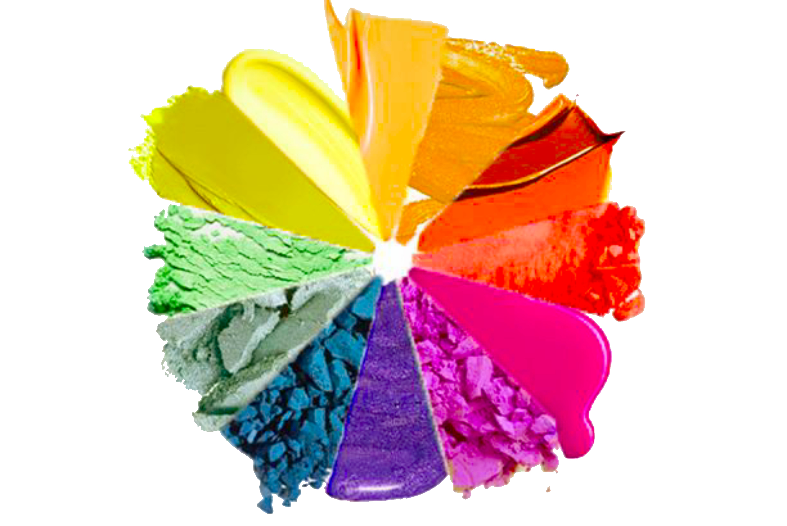

1. Skincare i Pikselizacija
Kada analiziramo teksturu kože na digitalnoj fotografiji, mi zapravo posmatramo matricu piksela. Kvalitet prikaza svake pore direktno zavisi od rezolucije (broja piksela po inču) i dubine boja.
Baš kao što loša rezolucija kvari sliku, tako i nedostatak hidratacije kvari prirodni "sjaj" kože.
Tehničke specifikacije:
- • Format: .JPG (Joint Photographic Experts Group)
- • Model boja: RGB (Red, Green, Blue)
- • Obrada: Rasterizacija matrice podataka

2. Makeup: RGB vs CMYK
Šminkanje je živa primena komplementarnih boja. Razumevanjem kruga boja postižemo savršen balans u estetici, dok u digitalnom svetu koristimo specifične modele mešanja boja.
- 💻 RGB model: Aditivno mešanje svetlosti za ekrane.
- 🖨️ CMYK model: Suptraktivno mešanje za štampu kataloga.
Primena u multimediji:
- • Dubina boja: 8-bitna po kanalu (24-bit total)
- • Kontrast: Dinamički opsežni raspon nijansi
- • Standard: Web-safe paleta boja
3. Dinamika i Frame Rate
Beauty tutorijali su savršen primer digitalnog videa. Da bi pokret nanošenja proizvoda bio fluidan, video mora imati stabilan broj frejmova u sekundi (fps).
U našem projektu koristimo PAL sistem koji garantuje profesionalni prikaz pokreta na evropskom tržištu.
Video standardi:
- • Frame Rate: 25 fps (PAL Standard)
- • Kompresija: H.264 / MP4 (High Definition)
- • Teorema: Shannon-Nyquist diskretizacija signala